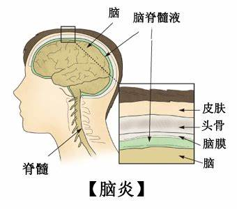

当下甲流高发，身边不断有人感染，着实令人担忧。你是否以为甲流只是难受几天，吃点药就能好？
事实并非如此！当甲流病毒在体内疯狂肆虐，免疫系统奋力抵抗时，一系列可怕的并发症正在悄然出现。
· 为何看似普通的甲流会引发严重后果?
· 这些并发症究竟有多危险?
· 肺炎、呼吸衰竭以及多器官受损为何会接踵而至?
我们难道只能束手无策，任由这些“健康杀手"威胁生命吗?
当然不是！深入了解甲流并发症，找到应对方法，在这高发期守护好自己与家人的健康，已刻不容缓。
甲流简介
1、甲流的基本概念
甲型流感，简称甲流，是由甲型流感病毒引起的急性呼吸道传染病。
其病毒具有较强的传染性，可通过飞沫传播、接触传播等多种途径在人群中迅速传播，尤其在冬春季节高发，容易引发大规模的流行。
2、甲流的常见症状
患者感染甲流后，通常会出现发热、咳嗽、咽痛、流涕、鼻塞、头痛、全身肌肉酸痛、乏力等症状。
这些症状与普通感冒有相似之处，但甲流的症状往往更为严重，发热温度更高，全身症状更明显，且病程相对较长。
甲流并发症的种类及危害
1、肺炎（白肺）
发病机制：甲流病毒可直接侵犯肺部组织，导致肺部炎症。
同时，病毒感染还会削弱人体的免疫功能，使呼吸道内原本定植的细菌等病原体趁机大量繁殖，引发继发性细菌感染，进一步加重肺部炎症。
临床表现：患者会出现咳嗽加剧、咳痰增多、呼吸急促、呼吸困难等症状。
严重时，肺部影像学检查可显示肺部大面积实变，即所谓的“白肺"，这会严重影响肺部的气体交换功能，导致机体缺氧，甚至危及生命。
高危人群：老年人、儿童、患有慢性呼吸系统疾病（如慢性阻塞性肺疾病、哮喘等）以及免疫功能低下的人群，由于自身肺部功能较弱或免疫防御能力不足，更容易发生甲流相关性肺炎，且病情进展可能更为迅速，预后较差。
2、支气管炎
发病机制：甲流病毒感染后，会引起呼吸道黏膜的炎症反应，导致支气管黏膜充血、水肿、分泌物增多。
炎症持续刺激支气管，可使其管壁增厚、管腔狭窄，影响气道通畅性。
临床表现：患者主要表现为持续性咳嗽，起初可能为干咳，随后逐渐出现咳痰，痰液可为白色黏液痰或黄色脓性痰。
部分患者还可能伴有胸闷、气促等症状，尤其是在活动后更为明显。
长期的支气管炎反复发作，可能会导致支气管结构和功能的不可逆性损伤，发展为慢性支气管炎，影响患者的生活质量。
高危人群：吸烟人群、长期暴露于空气污染环境中的人群以及患有呼吸道过敏疾病的人群，在感染甲流后，更容易并发支气管炎，且症状可能更为严重，恢复时间更长。
3、心肌炎
发病机制：甲流病毒感染后，机体免疫系统会被激活，产生一系列炎症因子和免疫细胞。
这些免疫反应在清除病毒的同时，也可能会对心肌细胞造成损伤，引发心肌炎。
此外，病毒本身也可能直接侵犯心肌细胞，导致心肌炎症和功能障碍。
临床表现：患者可能会出现心慌、心悸、胸痛、呼吸困难、乏力等症状。
严重的心肌炎可导致心律失常、心力衰竭，甚至心源性休克，对心脏功能造成严重损害，威胁患者生命安全。
高危人群：既往有心脏疾病（如先天性心脏病、心肌病等）的患者、运动员以及长期过度劳累的人群，在感染甲流后发生心肌炎的风险相对较高，且病情可能更为严重，需要密切关注和及时治疗。
4、心包炎
发病机制：甲流病毒感染引发的全身炎症反应可能累及心包，导致心包膜的炎症。
心包膜炎症可使心包腔内产生渗出液，积液增多时会压迫心脏，影响心脏的舒张和收缩功能。

临床表现：患者主要表现为心前区疼痛，疼痛可放射至颈部、肩部、背部等部位，疼痛性质多为刺痛或钝痛，常因深呼吸、咳嗽、体位改变等因素而加重。
同时，还可能伴有发热、乏力、呼吸困难等症状。大量心包积液可导致心脏压塞，出现血压下降、静脉压升高、心音遥远等体征，如不及时处理，可危及生命。
高危人群：患有自身免疫性疾病（如系统性红斑狼疮、类风湿关节炎等）的患者，由于自身免疫系统处于异常状态，在感染甲流后更容易并发心包炎，且病情可能更为复杂，治疗难度较大。
5、脑炎
发病机制：甲流病毒可通过血脑屏障进入中枢神经系统，引发脑部炎症。
病毒感染可导致神经细胞损伤、脑组织水肿、颅内压升高，进而影响大脑的正常功能。
临床表现：患者可能出现头痛、发热、呕吐、意识障碍、抽搐、肢体运动障碍等症状。
脑炎的严重程度和预后因个体差异而异，轻症患者经过治疗后可能完全康复，但重症患者可能会遗留神经系统后遗症，如智力障碍、癫痫、肢体瘫痪等，严重影响患者的生活质量和自理能力。
高危人群：儿童尤其是婴幼儿，由于血脑屏障发育尚未完善，对病毒的抵抗力较弱，感染甲流后发生脑炎的风险相对较高。
此外，老年人、免疫功能低下者以及患有神经系统疾病的人群，也是甲流并发脑炎的高危人群，需要高度警惕。
6、神经系统损伤
发病机制：除了直接侵犯中枢神经系统引发脑炎外，甲流病毒感染还可能通过免疫介导的炎症反应、血管内皮损伤等多种途径导致神经系统损伤。
炎症因子和免疫复合物可影响神经传导功能，血管病变可导致脑组织缺血、缺氧，进而引起神经系统功能障碍。
临床表现：患者可能出现头晕、头痛、记忆力减退、注意力不集中、睡眠障碍、感觉异常（如麻木、刺痛等）、运动障碍（如肌肉无力、震颤等）等多种症状。
这些神经系统损伤症状可能在甲流感染的急性期出现，也可能在恢复期或康复后一段时间内持续存在，对患者的身心健康造成长期影响。
高危人群：患有糖尿病、高血压、高脂血症等基础疾病的患者，由于这些疾病可能导致血管病变和神经病变，在感染甲流后更容易出现神经系统损伤。
此外，长期精神压力大、睡眠不足、营养不良的人群，也可能因自身抵抗力下降和神经调节功能絮乱，而增加甲流并发神经系统损伤的风险。
甲流并发症的预防与应对
1、预防措施
疫苗接种
接种甲型流感疫苗是预防甲流及其并发症最有效的手段之一。
疫苗可刺激机体产生特异性抗体，提高对甲流病毒的免疫力，降低感染风险和感染后的病情严重程度。
建议每年在流感季节来临前，尤其是高危人群，应及时接种流感疫苗。
个人防护
保持良好的个人卫生习惯，如勤洗手、咳嗽或打喷嚏时用纸巾或肘部捂住口鼻、避免用手触摸眼睛、口鼻等部位；
保持室内空气流通，定期开窗通风；
避免前往人员密集、通风不良的场所，如必须前往，应佩戴口罩；
加强体育锻炼，增强体质，提高免疫力；
保证充足的睡眠和合理的饮食，维持机体的正常生理功能和免疫平衡。
2、应对策略
早期诊断与治疗
一旦出现疑似甲流症状，应及时就医，进行相关检查，如流感病毒核酸检测、抗原检测等，以明确诊断。
对于确诊甲流的患者，尤其是高危人群，应密切观察病情变化，警惕并发症的发生。
一旦出现并发症的相关症状，如咳嗽加重、呼吸困难、心慌、胸痛、头痛、呕吐、意识改变等，应立即告知医生，以便及时进行针对性的检查和治疗。
综合治疗措施
针对甲流及其并发症，治疗方法包括抗病毒治疗、对症支持治疗和并发症的针对性治疗等。
抗病毒药物应在发病早期使用，可有效抑制病毒复制，缩短病程，减轻症状。
对症支持治疗包括退热、止咳、祛痰、平喘、吸氧、补液等，以缓解患者的不适症状，维持机体的生理功能。
对于并发肺炎、心肌炎、脑炎等严重并发症的患者，应根据具体病情采取相应的治疗措施，如抗感染治疗、营养心肌治疗、降颅压治疗、抗癫痫治疗等，必要时需入住重症监护病房(ICU)进行密切监护和抢救治疗。
总结
甲流不仅会引起发热、咳嗽等常见症状，还可能引发多种严重的并发症，对患者的健康造成严重威胁，甚至危及生命。
因此，我们应充分认识甲流并发症的危害，加强预防措施，提高自我保护意识。
一旦感染甲流，应及时就医，早期诊断和治疗，密切关注病情变化，积极预防和应对并发症的发生，以保障患者的生命安全和身体健康。
同时，医疗卫生机构应加强对甲流的监测和防控，提高诊疗水平，为患者提供及时、有效的医疗服务。
免责声明：本图片来源于互联网，如转载内容涉及版权等问题，请立即联系小编，我们将迅速采取适当的措施。